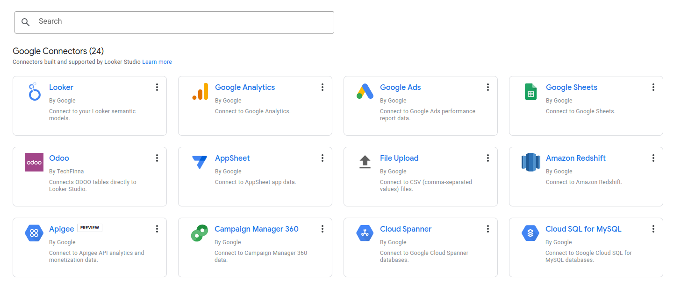
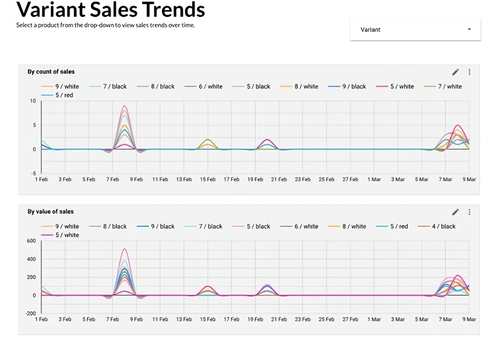
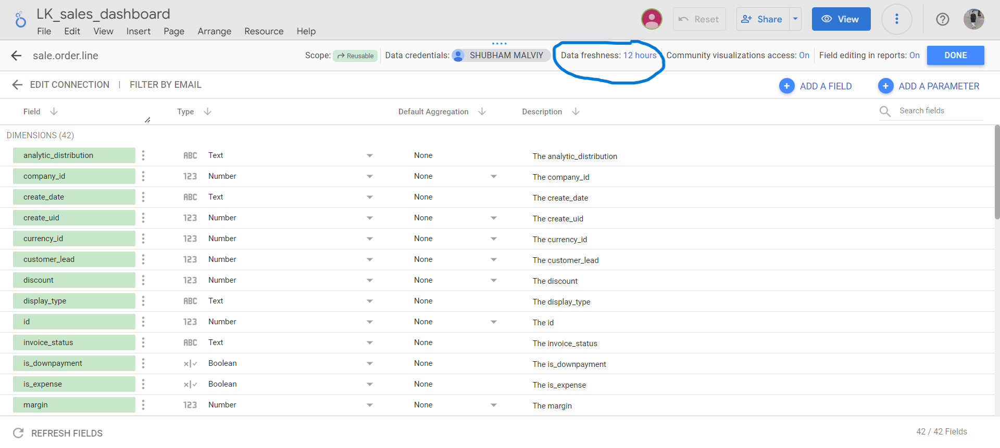

Watch Demo:


Verified by Google Looker Studio
Looker Studio Verified: Our Odoo Looker Connector is officially verified by Looker Studio and can be seamlessly integrated into your Looker Studio environment.

Techfinna's Odoo to Looker Studio Connector stands as the market's premier solution, pioneering direct data integration from Odoo to Looker Studio.
Our connector offers a hassle-free setup process, requiring only your Odoo-generated credentials to instantly sync with Looker Studio.
Gain full access to all your Odoo tables within Looker Studio, enabling a complete overview of your data for in-depth analysis.
Conveniently use manual refreshes for on-demand data updates. Schedule automatic data refresh feature is added in this module from 20 Jan 2024. (If you have an older version, please download the new version for free)
The connector automatically retrieves and maps Odoo table schemas in their native data types, eliminating manual schema definitions and offering a ready-to-go, customizable, and tweakable solution for immediate data analysis.
Execute Custom SQL Query and display your data on Google Looker Studio for comprehensive and selective table selection and analysis. Visit ( https://techfinna.com/looker-sql-connector/ ) to view add-on module
Begin by navigating to the data sources in Looker Studio "https://lookerstudio.google.com/datasources". and selecting the 'Odoo Connector by TechFinna'. This is your gateway to integrating Odoo's comprehensive data into Looker Studio's powerful visualization tools.
On the connector setup screen, you’ll be prompted to enter the Connector URL and Token provided by Looker Connector Module installed on Odoo. These credentials are key to establishing a secure connection between Odoo and Looker Studio.

Once connected, you’ll see a dropdown list of all Odoo tables. Select the table you wish to analyze. This flexibility allows you to tailor the data integration to your specific reporting needs.

The connector will automatically load the schema of the chosen table, converting Odoo's data types into Looker Studio-friendly formats. Review and tweak if necessary to match your reporting requirements.

With the schema set, click "Explore" or "Create Report" to start crafting your reports. You can now manipulate the data, refresh it as needed, and build custom reports, just like the 'Variant Sales Trends' example.

Set data freshness for a data source
Looker Studio automatically refreshes all the cached data for each data source used by your report at certain intervals. To change the default data refresh rate:
🔹 Edit the data source. You can do this from within a report or from the Data Sources home page.
🔹 At the top, click Data freshness.
🔹 Under Check for fresh data, select a new refresh option, if available.
🔹 Click Set Data Freshness.

🔹 If you want your data up to date, we will find data refresh at the top right corner.
🔹 Tab on data refresh, and you will find your data updated every time.

Unique Odoo to Power BI Desktop connector

Achieve seamless sync between Odoo and Google BigQuery.
Integrate Odoo data into Tableau Desktop in one click.
 Whatsapp: +91 62309 27667
Whatsapp: +91 62309 27667
 Email: info@techfinna.com
Email: info@techfinna.com